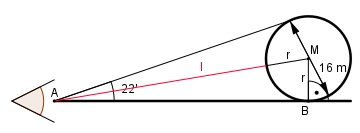

Aufgabe 82 Ein Beobachter sieht auf Augenhöhe einen Ballon unter einem Sehwinkel von 22'. Wie weit ist er entfernt?

11 11’ = -----° = 0,1833° 60 Im Dreieck ABM: r sin 0,1833° = ------- | *(l + r) l + r (l + r) * sin 0,1833° = r l*sin 0,1833° + r*sin 0,1833° = r |-r*sin 0,1833° l*sin 0,1833° = r – r*sin 0,1833° |:sin 0,1833° r – r * sin 0,1833° 8 m – 8 m * 0,0032 l = --------------------- = -------------------- = sin 0,1833° 0,0032 = 2 492 m